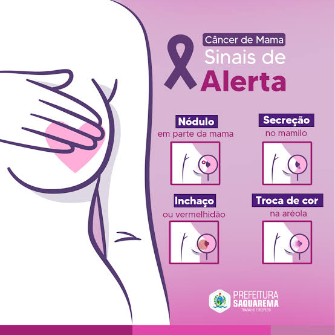

Fique Atenta aos Sinais

Principais sinais de alerta
- Nódulo: caroço ou endurecimento na mama ou axila.
- Alterações na pele: vermelhidão, retração ou aspecto de casca de laranja.
- Alterações no mamilo: mudanças no formato ou posição do mamilo.
- Secreção: saída espontânea de líquido pelo mamilo, principalmente com sangue.
- Inchaço: aumento de tamanho ou mudanças em parte da mama.
Importante!
Ao identificar qualquer alteração suspeita nas mamas, procure um profissional de saúde para avaliação. Nem toda alteração significa câncer, mas merece atenção.